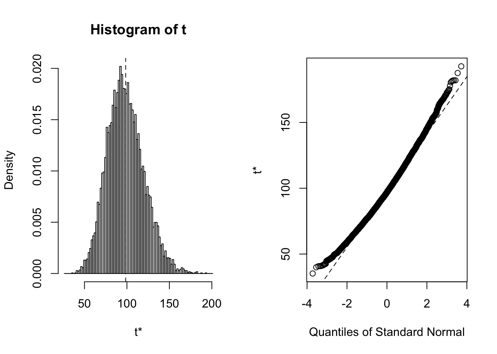

library(ggplot2, warn.conflicts = FALSE)ARG counts by sample:
arg_counts <- read.delim("arg_counts.edit", sep = "\t", row.names = 1)
head(arg_counts)## manure.pig.1 manure.pig.2
## gb|L42544|+|0-1956|ARO:3000193|tetT 5747 5617
## gb|AM180355|+|600033-601953|ARO:3000186|tetM 4369 4472
## gb|Z21523|+|0-1974|ARO:3000191|tetQ 3372 3469
## gb|AJ514254|+|0-1923|ARO:3000197|tet36 3327 3461
## gb|FN594949|+|25244-27167|ARO:3000556|tet44 2755 2890
## gb|JX560992|+|11387-12872|ARO:3003206|lsaE 2676 2693
## manure.pig.3 manure.beef.1
## gb|L42544|+|0-1956|ARO:3000193|tetT 4187 2066
## gb|AM180355|+|600033-601953|ARO:3000186|tetM 3280 2431
## gb|Z21523|+|0-1974|ARO:3000191|tetQ 2586 1577
## gb|AJ514254|+|0-1923|ARO:3000197|tet36 2514 2998
## gb|FN594949|+|25244-27167|ARO:3000556|tet44 2261 385
## gb|JX560992|+|11387-12872|ARO:3003206|lsaE 1959 657
## manure.beef.2 manure.beef.3
## gb|L42544|+|0-1956|ARO:3000193|tetT 1691 1628
## gb|AM180355|+|600033-601953|ARO:3000186|tetM 1273 2038
## gb|Z21523|+|0-1974|ARO:3000191|tetQ 642 1283
## gb|AJ514254|+|0-1923|ARO:3000197|tet36 1454 2687
## gb|FN594949|+|25244-27167|ARO:3000556|tet44 171 283
## gb|JX560992|+|11387-12872|ARO:3003206|lsaE 343 609
## soil.pig.1 soil.pig.2
## gb|L42544|+|0-1956|ARO:3000193|tetT 0 1
## gb|AM180355|+|600033-601953|ARO:3000186|tetM 0 0
## gb|Z21523|+|0-1974|ARO:3000191|tetQ 0 1
## gb|AJ514254|+|0-1923|ARO:3000197|tet36 0 0
## gb|FN594949|+|25244-27167|ARO:3000556|tet44 2 2
## gb|JX560992|+|11387-12872|ARO:3003206|lsaE 2 4
## soil.pig.3 soil.beef.1
## gb|L42544|+|0-1956|ARO:3000193|tetT 0 2
## gb|AM180355|+|600033-601953|ARO:3000186|tetM 0 0
## gb|Z21523|+|0-1974|ARO:3000191|tetQ 0 0
## gb|AJ514254|+|0-1923|ARO:3000197|tet36 0 0
## gb|FN594949|+|25244-27167|ARO:3000556|tet44 1 11
## gb|JX560992|+|11387-12872|ARO:3003206|lsaE 0 2
## soil.beef.2 soil.beef.3
## gb|L42544|+|0-1956|ARO:3000193|tetT 1 1
## gb|AM180355|+|600033-601953|ARO:3000186|tetM 2 0
## gb|Z21523|+|0-1974|ARO:3000191|tetQ 0 0
## gb|AJ514254|+|0-1923|ARO:3000197|tet36 0 1
## gb|FN594949|+|25244-27167|ARO:3000556|tet44 7 7
## gb|JX560992|+|11387-12872|ARO:3003206|lsaE 3 1ARG totals by factors:
arg_means <- read.delim("arg_means.tsv", sep = "\t", row.names = 1)
head(arg_means)## manure.pig.mean
## gb|L42544|+|0-1956|ARO:3000193|tetT 5183.667
## gb|AM180355|+|600033-601953|ARO:3000186|tetM 4040.333
## gb|Z21523|+|0-1974|ARO:3000191|tetQ 3142.333
## gb|AJ514254|+|0-1923|ARO:3000197|tet36 3100.667
## gb|FN594949|+|25244-27167|ARO:3000556|tet44 2635.333
## gb|JX560992|+|11387-12872|ARO:3003206|lsaE 2442.667
## manure.beef.mean manure.mean
## gb|L42544|+|0-1956|ARO:3000193|tetT 1795.0000 6978.667
## gb|AM180355|+|600033-601953|ARO:3000186|tetM 1914.0000 5954.333
## gb|Z21523|+|0-1974|ARO:3000191|tetQ 1167.3333 4309.667
## gb|AJ514254|+|0-1923|ARO:3000197|tet36 2379.6667 5480.333
## gb|FN594949|+|25244-27167|ARO:3000556|tet44 279.6667 2915.000
## gb|JX560992|+|11387-12872|ARO:3003206|lsaE 536.3333 2979.000
## soil.pig.mean soil.beef.mean
## gb|L42544|+|0-1956|ARO:3000193|tetT 0.3333333 1.3333333
## gb|AM180355|+|600033-601953|ARO:3000186|tetM 0.0000000 0.6666667
## gb|Z21523|+|0-1974|ARO:3000191|tetQ 0.3333333 0.0000000
## gb|AJ514254|+|0-1923|ARO:3000197|tet36 0.0000000 0.3333333
## gb|FN594949|+|25244-27167|ARO:3000556|tet44 1.6666667 8.3333333
## gb|JX560992|+|11387-12872|ARO:3003206|lsaE 2.0000000 2.0000000
## soil.mean pig.mean beef.mean
## gb|L42544|+|0-1956|ARO:3000193|tetT 1.6666667 5184.000 1796.3333
## gb|AM180355|+|600033-601953|ARO:3000186|tetM 0.6666667 4040.333 1914.6667
## gb|Z21523|+|0-1974|ARO:3000191|tetQ 0.3333333 3142.667 1167.3333
## gb|AJ514254|+|0-1923|ARO:3000197|tet36 0.3333333 3100.667 2380.0000
## gb|FN594949|+|25244-27167|ARO:3000556|tet44 10.0000000 2637.000 288.0000
## gb|JX560992|+|11387-12872|ARO:3003206|lsaE 4.0000000 2444.667 538.3333
## combined.mean
## gb|L42544|+|0-1956|ARO:3000193|tetT 6980.333
## gb|AM180355|+|600033-601953|ARO:3000186|tetM 5955.000
## gb|Z21523|+|0-1974|ARO:3000191|tetQ 4310.000
## gb|AJ514254|+|0-1923|ARO:3000197|tet36 5480.667
## gb|FN594949|+|25244-27167|ARO:3000556|tet44 2925.000
## gb|JX560992|+|11387-12872|ARO:3003206|lsaE 2983.000
## manure_soil.mean.diff
## gb|L42544|+|0-1956|ARO:3000193|tetT 6977.000
## gb|AM180355|+|600033-601953|ARO:3000186|tetM 5953.667
## gb|Z21523|+|0-1974|ARO:3000191|tetQ 4309.333
## gb|AJ514254|+|0-1923|ARO:3000197|tet36 5480.000
## gb|FN594949|+|25244-27167|ARO:3000556|tet44 2905.000
## gb|JX560992|+|11387-12872|ARO:3003206|lsaE 2975.000
## pig_beef.mean.diff
## gb|L42544|+|0-1956|ARO:3000193|tetT 3387.6667
## gb|AM180355|+|600033-601953|ARO:3000186|tetM 2125.6667
## gb|Z21523|+|0-1974|ARO:3000191|tetQ 1975.3333
## gb|AJ514254|+|0-1923|ARO:3000197|tet36 720.6667
## gb|FN594949|+|25244-27167|ARO:3000556|tet44 2349.0000
## gb|JX560992|+|11387-12872|ARO:3003206|lsaE 1906.3333Positive (negative) value \(x\) indicate there is \(x\) more (less) of a gene detected in manure.
manure.means <- arg_means[, c(1:3)]
head(manure.means)## manure.pig.mean
## gb|L42544|+|0-1956|ARO:3000193|tetT 5183.667
## gb|AM180355|+|600033-601953|ARO:3000186|tetM 4040.333
## gb|Z21523|+|0-1974|ARO:3000191|tetQ 3142.333
## gb|AJ514254|+|0-1923|ARO:3000197|tet36 3100.667
## gb|FN594949|+|25244-27167|ARO:3000556|tet44 2635.333
## gb|JX560992|+|11387-12872|ARO:3003206|lsaE 2442.667
## manure.beef.mean manure.mean
## gb|L42544|+|0-1956|ARO:3000193|tetT 1795.0000 6978.667
## gb|AM180355|+|600033-601953|ARO:3000186|tetM 1914.0000 5954.333
## gb|Z21523|+|0-1974|ARO:3000191|tetQ 1167.3333 4309.667
## gb|AJ514254|+|0-1923|ARO:3000197|tet36 2379.6667 5480.333
## gb|FN594949|+|25244-27167|ARO:3000556|tet44 279.6667 2915.000
## gb|JX560992|+|11387-12872|ARO:3003206|lsaE 536.3333 2979.000Adding column for differential abundances between pig- and cow-associated manure
manure.means$manure.pig_beef.diffs <- manure.means$manure.pig.mean - manure.means$manure.beef.mean
head(manure.means)## manure.pig.mean
## gb|L42544|+|0-1956|ARO:3000193|tetT 5183.667
## gb|AM180355|+|600033-601953|ARO:3000186|tetM 4040.333
## gb|Z21523|+|0-1974|ARO:3000191|tetQ 3142.333
## gb|AJ514254|+|0-1923|ARO:3000197|tet36 3100.667
## gb|FN594949|+|25244-27167|ARO:3000556|tet44 2635.333
## gb|JX560992|+|11387-12872|ARO:3003206|lsaE 2442.667
## manure.beef.mean manure.mean
## gb|L42544|+|0-1956|ARO:3000193|tetT 1795.0000 6978.667
## gb|AM180355|+|600033-601953|ARO:3000186|tetM 1914.0000 5954.333
## gb|Z21523|+|0-1974|ARO:3000191|tetQ 1167.3333 4309.667
## gb|AJ514254|+|0-1923|ARO:3000197|tet36 2379.6667 5480.333
## gb|FN594949|+|25244-27167|ARO:3000556|tet44 279.6667 2915.000
## gb|JX560992|+|11387-12872|ARO:3003206|lsaE 536.3333 2979.000
## manure.pig_beef.diffs
## gb|L42544|+|0-1956|ARO:3000193|tetT 3388.667
## gb|AM180355|+|600033-601953|ARO:3000186|tetM 2126.333
## gb|Z21523|+|0-1974|ARO:3000191|tetQ 1975.000
## gb|AJ514254|+|0-1923|ARO:3000197|tet36 721.000
## gb|FN594949|+|25244-27167|ARO:3000556|tet44 2355.667
## gb|JX560992|+|11387-12872|ARO:3003206|lsaE 1906.333library(boot)Create a mean function for use with bootstrapping.
boot.mean <- function(x, d) {
return(mean(x[d]))
}Bootstrapping of mean abundance for manure-pig samples.
boot.manure.pig <- boot(manure.means$manure.pig.mean, boot.mean, R = 10000)
summary(boot.manure.pig)## Length Class Mode
## t0 1 -none- numeric
## t 10000 -none- numeric
## R 1 -none- numeric
## data 427 -none- numeric
## seed 626 -none- numeric
## statistic 1 -none- function
## sim 1 -none- character
## call 4 -none- call
## stype 1 -none- character
## strata 427 -none- numeric
## weights 427 -none- numericplot(boot.manure.pig, index = 1)
boot.ci(boot.manure.pig, type = "bca")## BOOTSTRAP CONFIDENCE INTERVAL CALCULATIONS
## Based on 10000 bootstrap replicates
##
## CALL :
## boot.ci(boot.out = boot.manure.pig, type = "bca")
##
## Intervals :
## Level BCa
## 95% ( 65.76, 155.12 )
## Calculations and Intervals on Original ScaleThus, according to our bootstrap, any genes with observed abundances higher than 155 in the manure-pig treatment should be considered significant. The list of genes higher than that abundance in the manure.pig treatments are:
(sig_genes.manure.pig <- row.names(manure.means[manure.means$manure.pig.mean > 155, ]))## [1] "gb|L42544|+|0-1956|ARO:3000193|tetT"
## [2] "gb|AM180355|+|600033-601953|ARO:3000186|tetM"
## [3] "gb|Z21523|+|0-1974|ARO:3000191|tetQ"
## [4] "gb|AJ514254|+|0-1923|ARO:3000197|tet36"
## [5] "gb|FN594949|+|25244-27167|ARO:3000556|tet44"
## [6] "gb|JX560992|+|11387-12872|ARO:3003206|lsaE"
## [7] "gb|EU434751|+|658-2578|ARO:3000194|tetW"
## [8] "gb|KC688833|+|0-804|ARO:3002836|lnuB"
## [9] "gb|L20800|+|1062-2325|ARO:3000180|tetA(P)"
## [10] "gb|AF242872|+|2131-2878|ARO:3000375|ErmB"
## [11] "gb|FN594949|+|27481-28339|ARO:3002629|ANT(6)-Ib"
## [12] "gb|NC_013342.1|-|26737-27499|ARO:3003905|ANT(4')-Ib"
## [13] "gb|CP004067|+|52914-53709|ARO:3002647|APH(3')-IIIa"
## [14] "gb|KX470419.1|+|3811-4615|ARO:3004085|lnuG"
## [15] "gb|M18896.2|+|206-2126|ARO:3000190|tetO"
## [16] "gb|Y15510|+|0-1203|ARO:3000175|tet(H)"
## [17] "gb|KU736867.1|+|19653-21573|ARO:3004442|tet(W/N/W)"
## [18] "gb|JQ740052|+|2108-3329|ARO:3000567|tet(40)"
## [19] "gb|NC_023287|-|60996-61860|ARO:3002626|ANT(6)-Ia"
## [20] "gb|M12730|+|779-1514|ARO:3000250|ErmC"
## [21] "gb|AJ295238.3|+|163-2083|ARO:3000196|tet32"
## [22] "gb|NC_023287|-|65291-66509|ARO:3000615|mefA"
## [23] "gb|AY928180|+|0-495|ARO:3002837|lnuC"
## [24] "gb|KU612222.1|+|80337-81078|ARO:3003908|Erm(47)"
## [25] "gb|JX560992|+|8592-9321|ARO:3002630|ANT(9)-Ia"
## [26] "gb|M17124|+|1181-1982|ARO:3000498|ErmF"
## [27] "gb|L22689|+|261-1035|ARO:3000593|ErmQ"
## [28] "gb|NC_009495.1|-|3035492-3036527|ARO:3004146|cfrC"
## [29] "gb|L09756|+|0-1926|ARO:3000192|tetS"
## [30] "gb|U01945|+|373-916|ARO:3002897|SAT-4"
## [31] "gb|AY712687|+|0-831|ARO:3002628|aad(6)"
## [32] "gb|NC_009632|+|49744-50476|ARO:3000347|ErmA"
## [33] "gb|AF319779.2|+|32-833|ARO:3000604|Erm(35)"
## [34] "gb|M11036|+|0-1377|ARO:3000179|tet(L)"
## [35] "gb|U51479|+|0-921|ARO:3002636|APH(2'')-IIIa"
## [36] "gb|NC_012469|-|1800927-1802391|ARO:3000616|mel"
## [37] "gb|M64090|+|0-735|ARO:3000595|ErmT"
## [38] "gb|AY055428|-|20268-21084|ARO:3000412|sul2"
## [39] "gb|FR772051|+|8740-10315|ARO:3002833|vgaE"
## [40] "gb|L20800|+|2308-4267|ARO:3000195|tetB(P)"
## [41] "gb|NC_005076|+|9897-10629|ARO:3000599|Erm(33)"We repeat this process for the manure.beef treatments. We first create a function to automate this:
get_sig_genes <- function(df, treat, r = 10000)
{
bootstrap <- boot(df[, treat], boot.mean, R = r)
bootstrap.results <- boot.ci(bootstrap, type = "bca")
upper_cutoff <- bootstrap.results$bca[5]
return(row.names(df[df[, treat] > upper_cutoff, ]))
}Now we can feed it our data frame and treatment to get_sig_genes to get a list of significant genes for that ground-animal treatment. Passing the data frame manure.means and the treatment manure.beef, our genes are:
(sig_genes.manure.beef <- get_sig_genes(manure.means, "manure.beef.mean"))## [1] "gb|L42544|+|0-1956|ARO:3000193|tetT"
## [2] "gb|AM180355|+|600033-601953|ARO:3000186|tetM"
## [3] "gb|Z21523|+|0-1974|ARO:3000191|tetQ"
## [4] "gb|AJ514254|+|0-1923|ARO:3000197|tet36"
## [5] "gb|FN594949|+|25244-27167|ARO:3000556|tet44"
## [6] "gb|JX560992|+|11387-12872|ARO:3003206|lsaE"
## [7] "gb|EU434751|+|658-2578|ARO:3000194|tetW"
## [8] "gb|KC688833|+|0-804|ARO:3002836|lnuB"
## [9] "gb|L20800|+|1062-2325|ARO:3000180|tetA(P)"
## [10] "gb|KX470419.1|+|3811-4615|ARO:3004085|lnuG"
## [11] "gb|M18896.2|+|206-2126|ARO:3000190|tetO"
## [12] "gb|Y15510|+|0-1203|ARO:3000175|tet(H)"
## [13] "gb|KU736867.1|+|19653-21573|ARO:3004442|tet(W/N/W)"
## [14] "gb|NC_023287|-|60996-61860|ARO:3002626|ANT(6)-Ia"
## [15] "gb|AJ295238.3|+|163-2083|ARO:3000196|tet32"
## [16] "gb|NC_023287|-|65291-66509|ARO:3000615|mefA"
## [17] "gb|JX560992|+|8592-9321|ARO:3002630|ANT(9)-Ia"
## [18] "gb|L09756|+|0-1926|ARO:3000192|tetS"
## [19] "gb|AY712687|+|0-831|ARO:3002628|aad(6)"
## [20] "gb|NC_012469|-|1800927-1802391|ARO:3000616|mel"
## [21] "gb|AY055428|-|20268-21084|ARO:3000412|sul2"
## [22] "gb|L20800|+|2308-4267|ARO:3000195|tetB(P)"
## [23] "gb|FJ196385|-|11083-12313|ARO:3003107|mefB"
## [24] "gb|AM399080|-|1664-2150|ARO:3002835|lnuA"
## [25] "gb|M37699|+|585-1752|ARO:3000205|tetX"
## [26] "gb|AF024602|+|3155-3992|ARO:3002660|APH(6)-Id"
## [27] "gb|AF313472|+|15593-16397|ARO:3002639|APH(3'')-Ib"
## [28] "gb|JF969163|+|1053-1893|ARO:3000410|sul1"
## [29] "gb|AF121000|-|0-1155|ARO:3000183|tet(Z)"
## [30] "gb|AJ420072.1|+|22939-24163|ARO:3000478|tet(33)"
## [31] "gb|DQ390458|-|3095-3995|ARO:3002609|aadA9"
## [32] "gb|AP006618.1|+|4835199-4838688|ARO:3000501|Nocardia"
## [33] "gb|AF024666|+|35934-37110|ARO:3002703|cmx"
## [34] "gb|D37826|+|1070-2195|ARO:3002812|pp-flo"
## [35] "gb|NC_014638|-|1610636-1613960|ARO:3003730|Bifidobacteria"
Paul Villanueva
Ph.D. Student, Bioinformatics and Computational Biology
Iowa State University. Ames, IA.